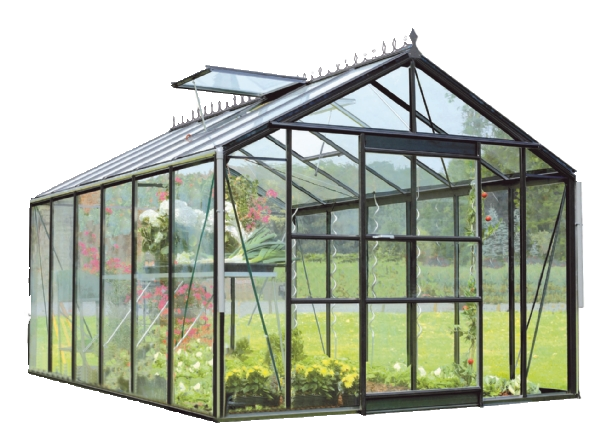

- Nous avons donc eu pour projet de créer une serre connectée. Dans le but d’avoir une production maraîchère locale et de sensibiliser les gens sur l’environnement, la mairie de Lyon décide d’installer des serres connectées sur les toits de leurs immeubles pour pouvoir produires des fruits et légumes.Afin de réduire leurs coûts et leur empreinte environnemental , nous souhaitons utiliser les moyens de récupération des ressources liées à l’immeuble telle que les déperditions de chaleurs et la récupération des eaux pour leur production.
- Une serre est une structure close ou semi-ouverte translucide, en verre ou en plastique, soutenue par une structure métallique ou en bois, destinée en général à la production agricole. La serre est un abri exploitant le rayonnement solaire, destiné à la culture et à la protection des plantes. L'objectif étant de créer un environnement propice à leur développement en tirant parti de l'influence du climat.

